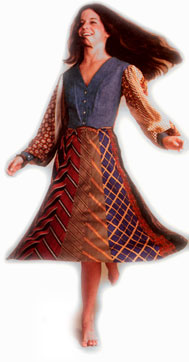
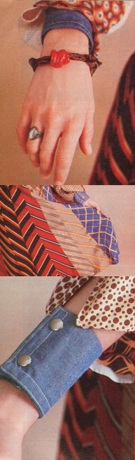

Carol Clivio explores a beautiful and unique way to recycle.
Men's neckties have a funny way of going out of style, and-since the cravats are usually made of the most luxurious fabrics available-a craftsperson can always look to such castoff clothing for high-quality material. Because, with a little work, neckties can be transformed into quilts, pillows, rugs, place mats, wall hangings, necklaces, Christmas tree ornaments, headbands, toys, and-best of all-elegant fashions.
GETTIN' ' EM TOGETHER
First, of course, you have to collect the ties. Just think for a minute, and I'll bet you can come up with some great sources. I, for instance, got my initial supply from a friend's father .. . who's a retired insurance broker and a member of a popular men's lodge. He and his associates provided me with a couple of bushel baskets full of old-and mostly beautiful-neckpieces. Many of them were 100% silk, and a few were even hand-painted.
Once you have a number of cravats on hand, you'll want to sort them. Since I'm particularly fond of silk, I put all the ties made of that material into one "special" pile. The other two groupings consisted of "pretty ones" and "ugly monsters". I'm using the former pile of ties in quilts, necklaces, ornaments, etc .... while the homely heap is hidden away in the attic, waiting to be transformed into a braided rug.
GETTIN' 'EM APART
To prepare the material for use, the ties must be ripped open, washed, and ironed. You'll need a pair of small, sharp scissors to remove the tags and open up the back seams. (A plastic-handled "ripper" is helpful, but not really necessary.) Some handsewn ties are put together with a single piece of strong, fine, silk thread which can be pulled out and saved for use as embroidery floss . . . while others will have to be clipped open.
Inside the tie, there'll be one or two strips of interfacing. (I save such material for tying up the tomato plants in my garden.)
You'll also find little triangular pieces of lining that are usually sewn in with a chain stitch (like those on feed bags). Just clip two or three links in the top of the chain, and the rest should come out easily when you tug on the thread ... though some stitches will have to be cut out. If you save all such lining pieces, you'll eventually accumulate enough to back a quilt top.
After they're disassembled, the ties should be separated by color ... handwashed-a-few at a time-in warm, soapy water and rinsed well.
Now, roll your treasures up in a towel to dry them, then remove the ties and press them right away with a warm-not hot-iron. Test the temperature carefully on a small corner of the material, so you don't accidentally scorch a big piece of the goods. Use a pressing cloth if the iron sticks, and place any painted designs face down before ironing. (All silk should be pressed on the "wrong" side, so that it won't pick up a shine.)
While you're ironing, you can also inspect each piece for imperfections. Some ties will have stickpin holes right smack in the middle, while others will have permanent stains . . . cut up the good parts of such "seconds" for patchwork projects.
Once you have a good selection of fabric pieces ready to be sewn, start your project. My most prized success is the luxurious silk skirt shown in the accompanying photos.
The materials needed to make the lovely garment are whole ties (the number will depend upon the width of the opened cravats and the size of the skirt-to-be), sharp scissors, a tape measure, a needle and thread, basting cotton, a yardstick, tailor's chalk, lining material, and waistband elastic (get the nonroll kind, 1/2" wide).
To start: Cut the triangular tips off each tie, decide how long you'll want the finished skirt to be, add 1 " to allow for the waistband and 2" for the hem, and cut each tie to the desired length. (Remove any excess fabric from the narrow ends, which will form the waist of the garment . . . the wide tips will eventually make up the hem.) Then arrange the colors and designs to suit your taste. Once you're certain of the order that you'll want the ties to appear in, it's a good idea to write it down.
Now this next part is very important! All ties-when they're made-are cut on the bias . . . that is, across the diagonal of the material's weave. This imparts a lot of "give" to the strip of cloth and will also make the skirt hahg beautifully and move fluidly, if the pieces are sewn together carefully!
To do the job right, lay two ties-one atop the other and with their "out" sides togetheron a flat surface. Smooth them until they're both perfectly straight, and then join them with pins. Now, use a yardstick and tailor's chalk to draw a line 1/2" from one edge, and baste the strips together ... run the basting 1/4" inside of your chalked mark. Next, remove the pins and sew the lengths together on the line, by hand, using a single-not a double-thread. Utilize a running stitch, and add one back stitch every inch or so to strengthen your seam. (Don't try to sew the ties together on a sewing machine . . . the different materials, the difference in weight, and the diagonal cut would certainly cause machine stitching to pucker.)
Continue to pin, baste, and sew until you've joined enough ties to go around your waist . . . then add one more cravat . . . handstitch the last length to the first one ... remove the rows of basting ... carefully press the seams open ... and your silk skirt is almost finished.
LINE AND HEM
To line the garment, lay it out diagonally-to use as a pattern-on a doubled piece of silky material. (My skirt's lining is black.) Then, leaving adequate seam allowance, cut the lining ... stitch up the two sides (again, by hand) .. . and press the seams open. Put the skirt inside the lining, wrong sides out, and sew around the top at a point 1/2" from the edge. Now, turn the skirt right side out and baste the top edge . . . to hold the lining 1/8" inside the skirt (so that you won't be able to see it when the garment is done).
Run another line of basting around the waist 1/2" down from the first. Next, sew about 1/16" below this basting-remember to leave a gap where you can insert the elastic-and then remove the basted stitches. When that's done, just follow package directions for measuring and cutting the stretchable waistband . . . thread it through the casing . . . and sew its ends together.
Now, don the garment and have someone pin up the bottom edges evenly all around ... be sure to make the lining about an inch shorter than the skirt itself. Finally, hem both skirt and lining (separately) using small, loose stitches.
Then slip on your creation and know how it feels to be the Queen of the Gypsies!
OTHER FANCY DUDS
Many articles of clothing can be made using the same tie-assembling procedure. Just sew the cravats-or sections of them-together, then lay down your pattern piece on them . . . treating the material as if it were whole cloth. You can also use castaway ties to trim garments . . . as I did on the vest-type jacket shown here. And just think of all the pretty scarves, collars, cuffs, pockets, sashes, halters, and yokes you can design from the free-for-the-asking satins and brocades!
This past Christmas, I made some salt and flour beads ... painted and polyurethaned them . . . strung them on tie material ... and ended up with chic chokers that I sold for $5.00 and up! I also used the neckcloths to make little quilted tree ornaments . . . padded, appliquéd wall hangings ... throw pillow covers ... and-right now-I'm working on a silk and velvet, Victorian-style crazy quilt. My next big project is going to be that braided rug . . . which makes me think of using ties to weave floor coverings. In fact, you could weave a lot of things with strips of discarded-cravat fabric.
With such a list of possible projects ahead of me, I guess I'd better search out some more ties . .. but should you beat me to them, may all your discoveries be wide, silk ones!
|
 |
 |
|